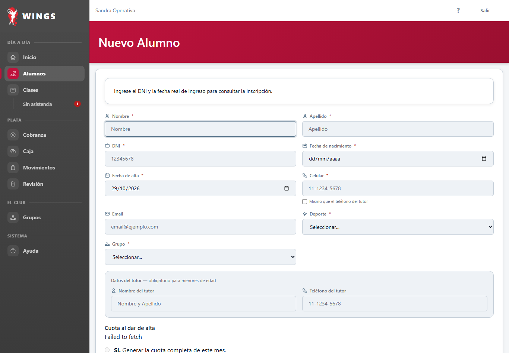
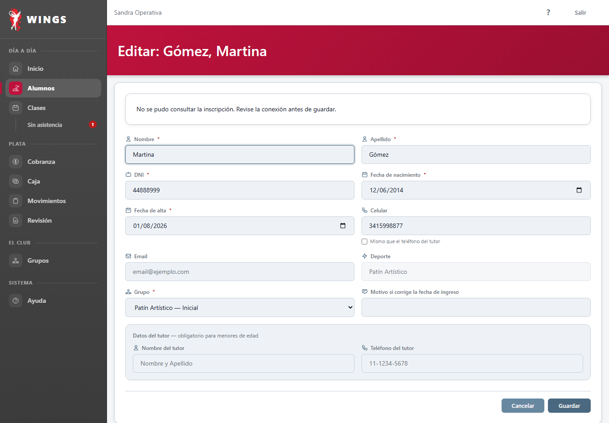
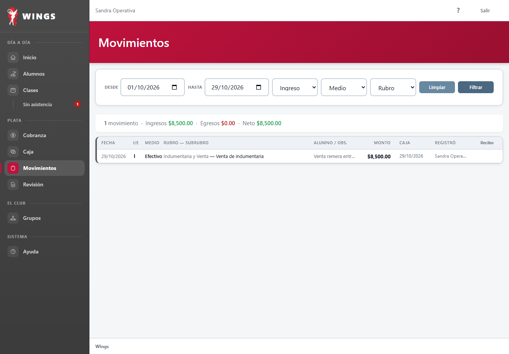
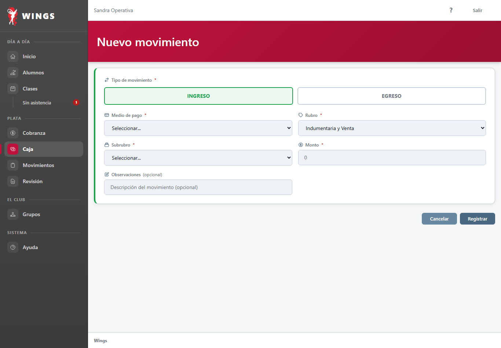
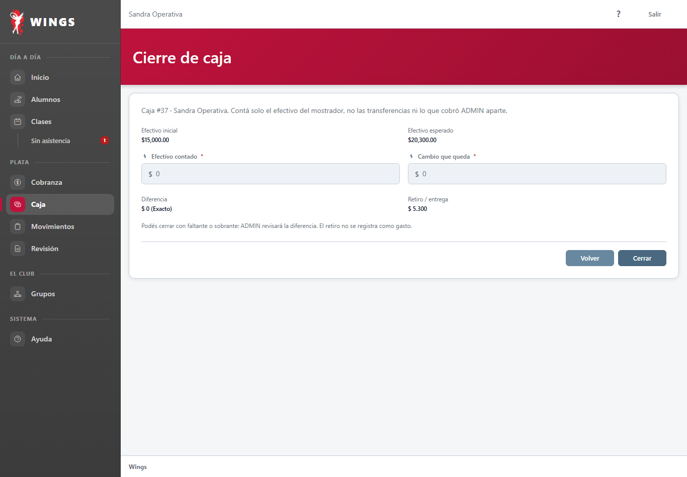
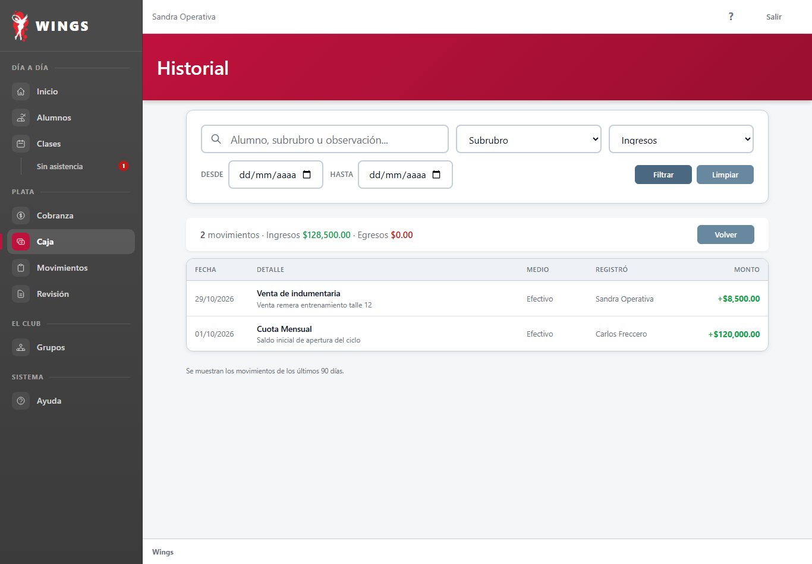

29/10/2026 · Implementación Gemini CAB · Método obligatorio: ejecución real en sistema, fuentes verificadas, 0 inventos, MD5 único y freno de etapa.
19 Guías del Manual: Operativa (Páginas 2 a 20) Etapa A Completa
Cada una redactada en castellano rioplatense, sin tecnicismos, con botones y campos en negrita, citas textuales exactas en «», sección «Qué hago si…» y capturas reales paso a paso con hashes MD5 únicos.
2. Cobrar un pago parcial de cuota
Categoría: Caja y cobranza · Pantalla: /caja/cobrar/{alumnoId} · COB-002
Cómo registrar un pago por un importe menor al total de la cuota y cómo se computa el saldo pendiente en Wings.
3. Buscar alumnos en el listado
Categoría: Alumnos y familias · Pantalla: /alumnos · ALU-001
Cómo buscar alumnos por nombre, apellido o DNI y filtrar por deporte, grupo y condición en el listado.
Paso 3. Aplicar filtros por deporte y grupo
4. Dar de alta a un alumno nuevo
Categoría: Alumnos y familias · Pantalla: /alumnos/create · ALU-002
Cómo cargar un alumno nuevo con sus datos personales, contacto de emergencia y asignación inicial a un deporte y grupo.
Paso 2. Completar los datos personales y de contacto

5. Modificar datos de un alumno
Categoría: Alumnos y familias · Pantalla: /alumnos/{alumnoId}/edit · ALU-003
Cómo editar los datos de contacto, domicilio, notas y datos de tutores de un alumno registrado.
6. Cambiar a un alumno de grupo o frecuencia
Categoría: Alumnos y familias · Pantalla: /alumnos/{alumnoId}/edit · ALU-004
Cómo reasignar a un alumno a un nuevo grupo deportivo o cambiar su frecuencia semanal de entrenamiento.
Paso 2. Elegir el nuevo grupo y la frecuencia semanal

7. Pasar a un alumno a Inactivo
Categoría: Alumnos y familias · Pantalla: /alumnos/{alumnoId} · ALU-005
Cómo cambiar la condición de un alumno entre Activo e Inactivo desde su ficha conservando su historial de deudas y pagos.
Paso 2. Cambiar la condición a Inactivo
Paso 3. Cómo reactivar al alumno si vuelve al club
8. Consultar el estado de cobranza
Categoría: Caja y cobranza · Pantalla: /cobranza · COB-003
Cómo monitorear el panel de cobranza con los totales de alumnos al día, en plazo, morosos y deudores.
9. Consultar el registro de movimientos
Categoría: Caja y cobranza · Pantalla: /movimientos · MOV-001
Cómo consultar el listado histórico de movimientos de caja y cobros filtrando por fecha, tipo y medio de pago.
Paso 2. Filtrar por rango de fechas, tipo o medio de pago

Paso 3. Auditar los registros
10. Abrir el turno de caja
Categoría: Caja y cobranza · Pantalla: /caja/apertura · CAJ-001
Cómo registrar la apertura del turno diario ingresando el efectivo recibido en el mostrador.
11. Registrar un ingreso directo en el turno de caja
Categoría: Caja y cobranza · Pantalla: /caja/movimiento · CAJ-002
Cómo asentar un ingreso manual de dinero en la caja de mostrador seleccionando rubro y concepto.
Paso 2. Seleccionar INGRESO y clasificar el concepto

12. Registrar un gasto menor o salida de dinero del cajón [DU-20]
Categoría: Caja y cobranza · Pantalla: /caja/movimiento · DU-20
Cómo asentar una salida de efectivo del cajón para compras menores o cuando el dueño retira dinero del mostrador.
13. Cancelar un movimiento en una caja abierta o rechazada
Categoría: Caja y cobranza · Pantalla: /caja/{cajaId}/detalle · CAJ-003
Cómo anular un cobro o gasto mal registrado en la caja diaria con motivo obligatorio antes de que sea validada.
14. Cerrar el turno de caja y rendir el arqueo
Categoría: Caja y cobranza · Pantalla: /caja/{cajaId}/cerrar · CAJ-004
Cómo contar el efectivo del mostrador, declarar el arqueo y cerrar el turno para revisión del dueño.
Paso 2. Ingresar el efectivo contado y el cambio retenido

15. Rectificar una apertura o cierre observado
Categoría: Caja y cobranza · Pantalla: /caja/{cajaId}/rectificar · CAJ-005
Cómo corregir el efectivo declarado cuando el dueño rechaza la caja indicando una observación.
16. Consultar el historial de turnos de caja
Categoría: Caja y cobranza · Pantalla: /caja/historial · CAJ-006
Cómo ver las cajas anteriores, su estado de validación, diferencias de arqueo y acceder a sus detalles.
Paso 2. Filtrar por texto, concepto o rango de fechas

17. Consultar clases del día y asistencia
Categoría: Clases y asistencia · Pantalla: /clases · CLA-001
Cómo ver la grilla de clases programadas para el día, sus horarios, deportes, grupos y estado de lista.
Paso 1. Ingresar al módulo Clases
Paso 2. Interpretar los estados de las clases
Paso 3. Filtrar clases pasadas o futuras
18. Tomar lista de asistencia desde el mostrador
Categoría: Clases y asistencia · Pantalla: /clases/{claseId} · CLA-002
Cómo registrar presentes y ausentes en una clase desde la computadora de recepción si el docente no tiene dispositivo.
Paso 1. Ingresar a la clase
Paso 2. Marcar los presentes y guardar
19. Resolver casos en Revisión de cobranza
Categoría: Alumnos y familias · Pantalla: /revision-cobranza · REV-001
Cómo gestionar alumnos observados por falta de asistencia al inicio de mes y decidir si continúan o pasan a inactivos.
Paso 1. Ingresar a Revisión de cobranza
Paso 2. Contactar a la familia y definir la continuidad
Paso 3. Cargar la nota y confirmar
20. Consultar grupos y planes deportivos
Categoría: Alumnos y familias · Pantalla: /grupos · GRU-001
Cómo consultar las disciplinas, grupos por nivel y planes arancelarios vigentes para informar a las familias.
Paso 1. Ingresar al módulo Grupos
Paso 2. Filtrar por disciplina deportiva
Paso 3. Consultar aranceles y alumnos activos